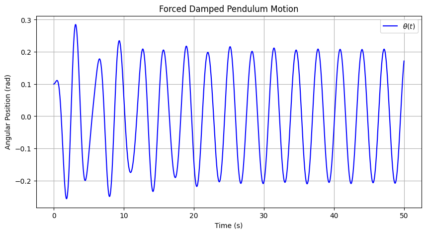
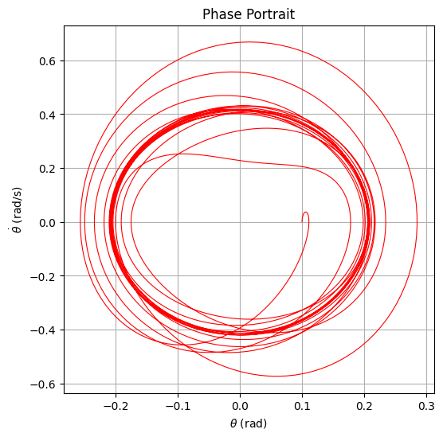
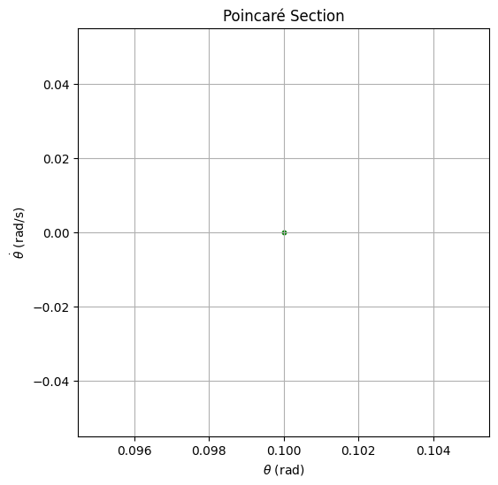
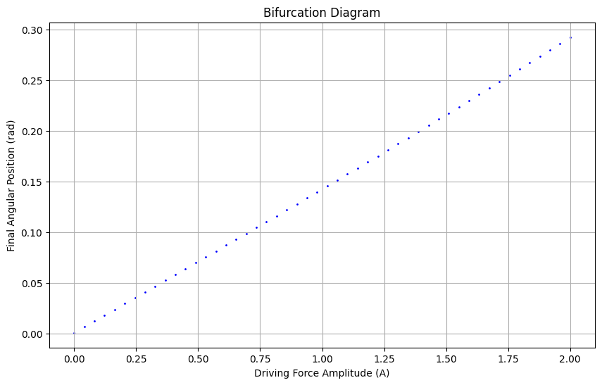

Problem 2
Cosmic Velocities: Definitions, Derivations, and Applications in Space Exploration
1. Definition and Physical Meaning
In astrodynamics, the first, second, and third cosmic velocities represent critical speeds for a body to achieve specific orbital or escape conditions relative to a celestial body.
1.1 First Cosmic Velocity (Orbital Velocity)
- Definition: The minimum speed an object must have to maintain a stable circular orbit just above the surface of a planet or celestial body.
- Physical Meaning: The object is in free fall but constantly missing the surface due to its horizontal speed.
- Formula:
$$ v_1 = \sqrt{\frac{GM}{R}} $$
1.2 Second Cosmic Velocity (Escape Velocity)
- Definition: The minimum speed required to completely escape the gravitational field of a celestial body without further propulsion.
- Physical Meaning: Object has just enough kinetic energy to reach infinity with zero velocity.
- Formula:
$$ v_2 = \sqrt{\frac{2GM}{R}} = \sqrt{2} \cdot v_1 $$
1.3 Third Cosmic Velocity (Interplanetary/Interstellar Velocity)
- Definition: The minimum speed needed for a spacecraft to escape the Sun’s gravity from Earth orbit (or another planet), enabling interplanetary or interstellar travel.
- Physical Meaning: Escape from both Earth’s and the Sun’s gravitational pulls.
- Approximate Value from Earth's surface: \~16.7 km/s
2. Mathematical Analysis and Influencing Parameters
Each velocity depends on:
- \(G\): Gravitational constant
- \(M\): Mass of the celestial body
- \(R\): Radius of the celestial body (distance from the center of mass)
\[
v_1 \propto \sqrt{\frac{M}{R}}, \quad v_2 \propto \sqrt{\frac{M}{R}}, \quad v_3 \propto \text{(depends on both Earth and Sun parameters)}
\]
   
3. Real-World Calculations for Earth, Mars, and Jupiter
Let’s calculate \(v_1\), \(v_2\), and approximate \(v_3\) for:
| Planet | Mass (kg) | Radius (m) |
|---|---|---|
| Earth | \(5.97 \times 10^{24}\) | \(6.37 \times 10^6\) |
| Mars | \(6.42 \times 10^{23}\) | \(3.39 \times 10^6\) |
| Jupiter | \(1.90 \times 10^{27}\) | \(6.99 \times 10^7\) |
We use:
\[
v_1 = \sqrt{\frac{GM}{R}}, \quad v_2 = \sqrt{2} \cdot v_1
\]
Approximate \(v_3\) for Earth uses Sun’s parameters and Earth’s orbital speed.
4. Applications in Space Exploration
First Cosmic Velocity Applications:
- Launching artificial satellites
- Establishing space stations in low Earth orbit (LEO)
Second Cosmic Velocity Applications:
- Missions to the Moon, Mars, or deep space
- Any escape trajectory from Earth
Third Cosmic Velocity Applications:
- Interplanetary missions (e.g., Voyager, New Horizons)
- Interstellar probes aiming to exit the Solar System
Understanding these speeds is critical in:
- Fuel and trajectory planning
- Selecting launch windows
- Ensuring mission success
5. Implementation
Python Model Outline:
- Define planetary data: \(M, R\)
- Calculate \(v_1\), \(v_2\), and estimate \(v_3\)
- Visualize results using bar or line plots
Visualization Ideas:
- Bar chart comparing \(v_1, v_2, v_3\) for each planet
- Overlay orbital/escape trajectories (optional)
- Log scale comparison (for emphasis on large values)
6. Discussion: Limitations and Advanced Considerations
Limitations:
- Assumes spherical, non-rotating planets
- Ignores atmospheric drag
- \(v_3\) estimated simplistically, without full orbital mechanics
Possible Extensions:
- Add atmospheric effects for realistic launch speeds
- Incorporate rocket equation for fuel analysis
- Use patched conic approximation for precise interplanetary trajectories
Conclusion
Understanding the three cosmic velocities forms the basis of all orbital mechanics and space mission planning. From satellite launches to Mars missions and beyond, these speeds dictate what's possible—and how much energy it will cost.